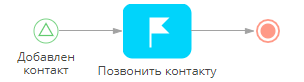
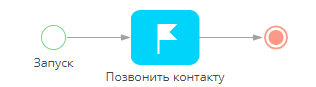
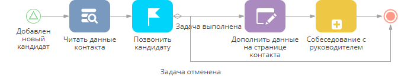
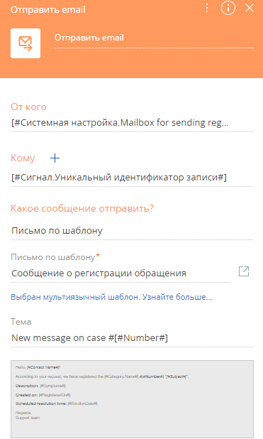
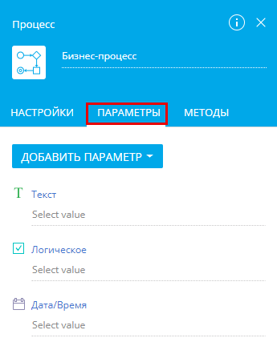
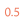
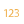
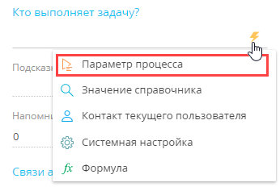
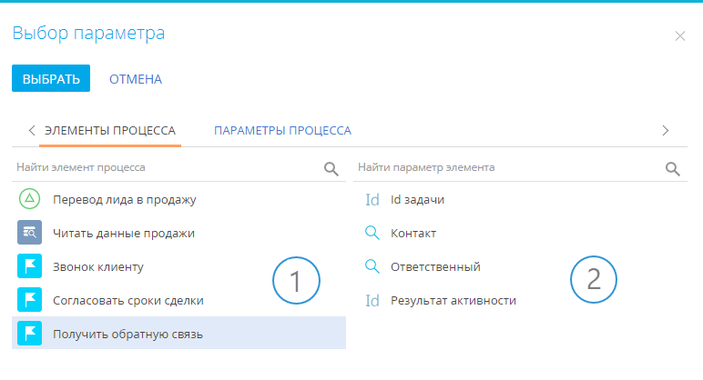

Для выполнения каждой задачи в ходе процесса требуются некоторые исходные данные, например, дата и время встречи, ответственный за выполнение задачи, контактное лицо клиента и т. д. Вдобавок часто возникает необходимость обмена данными как между элементами одного и того же бизнес-процесса (например, при отправке email тому же контакту, который указан в настройках шага процесса "Встреча"), так и между разными процессами (например, при ветвлении процесса в зависимости от результата выполнения его подпроцесса).
В следующей таблице приведены распространенные бизнес-задачи с учетом особенностей выполнения процессов в bpm'online.
| Бизнес-задача | Задача в bpm’online | Задача процесса |
| Запланировать задачу, чтобы ее можно было легко идентифицировать в календаре. | В разделе [Активности] добавить новую запись (встречу) с определенным значением в поле [Заголовок]. | Вручную ввести заголовок задачи, которую нужно задать в качестве значения параметра [Что должно быть сделано?] элемента процесса [Выполнить задачу]. Больше информации об установке статичного значения параметра доступно в статье “Как задать статичные и переменные значения параметров”. |
| Назначить ответственным за выполнение задачи пользователя, который запустил процесс. | Поле [Ответственный] записи, добавленной в разделе [Активности], должно быть заполнено контактом текущего пользователя. | Задать "Контакт текущего пользователя" в качестве переменного значения параметра [Кто выполняет задачу] элемента [Выполнить задачу]. Больше информации об установке переменного значения параметра доступно в статье “Как задать статичные и переменные значения параметров”. |
| Сразу после окончания встречи отправить email-уведомление контактному лицу. | Создать новое письмо. Поле [Кому] заполнить email-адресом контакта, указанного в поле [Контакт] созданной ранее активности. | В поле [Кому] элемента [Отправить email] должно быть задано то же значение параметра, что и в поле [Контакт] элемента [Выполнить задачу]. Больше информации о возможностях обмена параметрами элементов доступно в статье “Как задать статичные и переменные значения параметров”. |
Пример
В bpm'online marketplace доступны бесплатные темплейты бизнес-процессов с примерами использования параметров процесса (Рис. 63, Рис. 64, Рис. 65, Рис. 66, Рис. 67). Для загрузки темплейта перейдите по ссылке.
После установки темплейта marketplace в разделе [Библиотека процессов] появится два новых процесса: “Call a client” (звонок клиенту) и “CEO review” (собеседование с руководителем). Выберите процесс и по кнопке [Открыть] перейдите к его диаграмме. В этих процессах доступны упомянутые в статье примеры.
Рис. 63 — Пример получения значения параметра из другого параметра

Рис. 64 — Пример установки системной переменной (контакт текущего пользователя) в качестве значения параметра

Рис. 65 — Пример получения значения параметра из записи, созданной в рамках того же процесса

Рис. 66 — Пример обмена значениями параметров между подпроцессом и родительским процессом

Рис. 67 — Диаграмма подпроцесса "Собеседование с руководителем"

Для решения перечисленных задач процесса bpm’online использует параметры.
Что такое параметры?
Параметры подобны полям на страницах записей bpm'online: они могут быть заполнены значениями разных типов (текстовыми, числовыми, значениями справочников и т. д.). В bpm'online параметры бизнес-процессов имеют следующие функции:
-
Отвечают за особенности (или “исходные условия”) выполнения элементов бизнес-процесса (например, как будет называться созданная по процессу активность и сколько она продлится, кто будет ответственным по ней и т. д.).
-
Являются средством обмена информацией между элементами процесса (например, какой был результат выполнения задачи, кто за нее отвечал и т. д.) или между подпроцессом и родительским процессом. Подробную информацию о возможности обмена параметрами между элементами и процессами можно найти в статьях “Как настроить передачу параметров между элементами бизнес-процесса” и “Как передать параметры из одного бизнес-процесса в другой”.
Поскольку параметры представляют состояние элемента процесса после его выполнения, их значения могут использоваться для ветвления процессов с помощью логических операторов и условных потоков.
Параметры есть и у бизнес-процесса, и у его элементов.
Параметры элемента отображаются на панели настройки свойств элемента. Например, поле [Кому] элемента [Отправить еmail] (Рис. 68) — это текстовый параметр, значением которого является email-адрес получателя.

Важные параметры элемента отображаются на панели настройки его свойств, когда вы выбираете элемент на диаграмме процесса. Если панель настройки элемента не отображается, откройте ее, кликнув по элементу. Чтобы отобразить весь список параметров элемента, перейдите в расширенный режим (Рис. 69).
Рис. 69 — Переход в расширенный режим панели настройки свойств элемента

НА ЗАМЕТКУ
Названия параметров в основном и развернутом режиме могут отличаться. Чтобы определить, какой параметр заполняется, введите произвольное значение для необходимого параметра в основном режиме, переключитесь в расширенный режим и найдите добавленное значение в списке параметров.
Параметры процесса доступны на вкладке [Параметры] панели настройки процесса (Рис. 70), которую можно отобразить по кнопке  или кликнув курсором в рабочей области дизайнера процессов (если открыта панель настройки элемента).
или кликнув курсором в рабочей области дизайнера процессов (если открыта панель настройки элемента).
Рис. 70 — Вкладка [Параметры] панели настройки свойств процесса

Типы параметров
Тип параметра соответствует типу данных его значения. Типы параметров почти аналогичны типам колонок в разделах и справочниках bpm’online.
В bpm’online используются такие типы параметров:
| Текст | Параметр, значением которого является строка текста. Может быть как постоянным значением, так и вычисляться в ходе процесса. Например, параметр [Что нужно сделать?] элемента [Выполнить задачу]. |
|  Дробное число | Хранит десятичные числовые значения и обменивается ими. Например, параметр [Результат функции] элемента [Читать данные]. |
|  Целое число | Хранит целые числовые значения и обменивается ими. Например, параметр [Через сколько начать выполнение] элемента [Выполнить задачу]. |
| Логическое | Хранит логические значения (“Да” или “Нет”). Например, параметр [Обязательно должен быть выбран один из вариантов] элемента [Вопрос пользователю]. |
| Справочный | Параметр, в котором хранится значение из справочника (например, ссылка на запись справочника). Например, параметр [Кто заполняет страницу?] элемента [Открыть страницу редактирования] можно заполнить значениями из справочника [Контакт]. |
| Дата/Время | Хранит определенные значения даты/времени. Например, параметр [Дата и время начала] элемента [Стартовый таймер]. |
|
| Хранит значения мультивалютных полей. Подробнее о мультивалютных полях читайте в статье “Работа с валютами“. |
| Коллекция объектов | Параметры-коллекции содержат сложные значения, каждое из которых представляет ряд записей. Например, это может быть список контактов с именем, адресом и телефонным номером каждого контакта. Этот тип параметра может использоваться разработчиками в скриптах. |
|
| Хранит уникальный идентификатор записи. Например, параметр [Id] начального элемента [Сигнал]. |
 Валюта
Валюта Id (Уникальный идентификатор)
Id (Уникальный идентификатор)В зависимости от того, когда и как задается значение параметра, оно может быть входящим или исходящим.
-
Входящие значения задаются до выполнения элемента или процесса. Входящие параметры влияют на выполнение элемента процесса.
-
Исходящие значения задаются во время выполнения процесса или элемента. Обычно эти значения представляют собой результат выполнения либо состояние процесса или элемента после выполнения.
В некоторых параметрах входящее значение можно заменить исходящим, например, если задача была связана с определенным контактом, но в ходе процесса появилась необходимость заменить такой контакт другим.
Заполнение входящих значений параметров
Заполнить входящие значения параметров можно такими способами:
-
Ввести статичное значение параметра вручную. В таком случае значения параметров указываются прямо при построении процесса, они неизменны во всех экземплярах процесса. Например, название задачи (параметр [Что нужно сделать?]) создано с помощью элемента [Выполнить задачу]. Больше информации о статичных и переменных значениях параметров доступно в статье “Как настроить передачу параметров между элементами бизнес-процесса”.
-
Выбрать “системная настройка” (например, “Контакт получателя для тестовой отправки email”) или “системная переменная” (например, текущие дата и время, контакт текущего пользователя, контрагент текущего пользователя и т. д.), значение которой будет передано в параметр. В этом случае значения параметров будут такими же, как значения соответствующих системных настроек или системных переменных на момент выполнения процесса. Например, если выбрать контакт текущего пользователя в качестве значения параметра [Кто выполняет задачу?] элемента [Выполнить задачу], то соответствующая задача будет создана для пользователя, который запустил процесс. Больше информации о статичных и переменных значениях параметров доступно в статье “Как настроить передачу параметров между элементами бизнес-процесса”.
-
Использовать формулу. Несколько параметров можно объединить или преобразовать в параметры других типов с помощью синтаксиса формул. Например, можно скомбинировать текстовую строку со значением параметра. Больше информации об использовании формул доступно в статье “Как настроить передачу параметров между элементами бизнес-процесса”.
-
Получить значение из другого параметра. Этот способ позволяет получить значение параметра из другого параметра процесса. Например, можно получить данные контакта, с которым ранее была назначена встреча (параметр [Контакт] элемента [Выполнить задачу]), и передать полученное значение в параметр [Кому] элемента [Отправить email].
Получение значения параметра из другого параметра
Можно настроить, чтобы параметр получал свое входящее значение из другого параметра с таким же типом данных.
Например, этот способ хорош, когда новый контакт добавляется с помощью элемента [Открыть страницу редактирования], а позже в ходе процесса должна быть назначена встреча с этим же контактом. В таком случае “исходное значение параметра” [Идентификатор записи] (где хранится Id записи контакта, созданного при выполнении элемента [Открыть страницу редактирования]), должно быть передано в “целевой параметр” [Контакт] элемента [Выполнить задачу]. Больше информации о возможности обмена параметрами между элементами доступно в статье “Как настроить передачу параметров между элементами бизнес-процесса”.
НА ЗАМЕТКУ
Убедитесь, что "исходный" параметр корректно задан на момент получения его значения "целевым" параметром.
В большинстве случаев параметры могут получать значения только от других параметров того же типа. Однако некоторые параметры могут получать значения параметров, тип которых отличается:
-
Параметры [Дата/Время] могут хранить взаимозаменяемые значения: вы можете указать значение даты в параметре времени и наоборот.
-
Параметры [Целое число] и [Дробное число] могут хранить взаимозаменяемые значения. То есть вы можете указывать дробное значение в параметре [Целое число] и наоборот. Целое и дробное числа будут преобразованы в зависимости от параметра, в который они передаются.
-
Справочные параметры могут хранить уникальный идентификатор записи (Id). Например, укажите Id контакта в справочном параметре, значения которого могут быть выбраны из справочника [Контакт].
Для получения значения параметра из другого параметра:
1.Нажмите кнопку  рядом с полем "целевого" параметра (параметра, значение которого необходимо задать).
рядом с полем "целевого" параметра (параметра, значение которого необходимо задать).
2.Выберите опцию "Параметр процесса" в меню (Рис. 71). Откроется окно определения значения параметра (Рис. 72).
Рис. 71 — Окно определения значения параметра

3.В окне определения значения параметра выберите "исходный" параметр процесса или элемента (тот, значение которого должно быть передано в целевой параметр).
На вкладке [Параметры элементов] (Рис. 72) окна выбора параметра отображается список элементов текущего процесса (1). Если выбрать элемент в левой части окна, то в правой части отобразится список параметров выбранного элемента (2). В списке представлены только те параметры, тип которых соответствует типу "целевого" параметра. Дважды кликните по параметру в списке, чтобы передать его значение в “целевой” параметр.
Рис. 72 — Вкладка выбора параметров элементов

На вкладке [Параметры процесса] (Рис. 73) отображаются все доступные параметры процесса. В списке представлены только те параметры, тип которых соответствует типу "целевого" параметра. Дважды кликните по параметру в списке, чтобы передать его значение в “целевой” параметр.
Рис. 73 — Вкладка выбора параметров процесса

Примеры использования параметров
•Как задать статичные и переменные значения параметров
•Как настроить запуск бизнес-процесса по записи раздела
•Как настроить передачу параметров между элементами бизнес-процесса